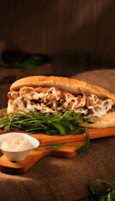
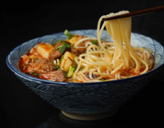
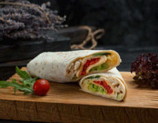
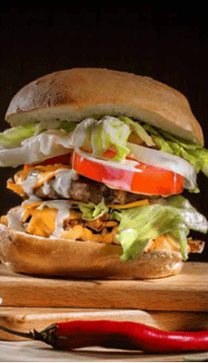
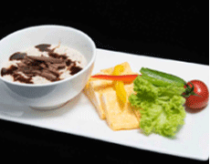
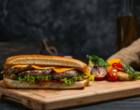
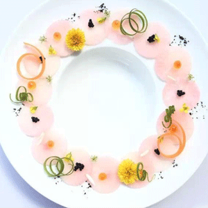
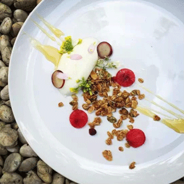
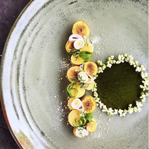

新品推荐






星级美食达人教摆盘：从此拍出高逼格美食照片！
- Nick
- Hwang
- Sharon
- Juliette
Nick 是一位泰国小哥，素食主义者。他是一名在家自学成才的厨子。噢不，他还说，「我不是厨子，我只是有激情」。没事就爱在家折腾食物，比如把红萝卜切成几乎透明的一片片，每片上面摆一颗鱼子酱或者一朵野花；比如把希腊奶酪和印度无花果摆在一起，碾碎杏仁，泼墨一样撒上两笔蓝莓酱。
  Hwang，看名字像是美籍华人，她的网站 （www.mycookingdiary.com）设计非常简单，只有一张大大的图片，往右可以看下一张，点击图片可以查看食谱。和 Nick的作品比起来，Sharon的食物更偏家常。Sharon 都是用大碗，大份的沙拉、石锅饭、罗宋汤或者面食。但这丝毫不影响 Sharon 照片的美感。
Sharon 的照片大多是纯色的背景（而且每张不一样），碗放在正中间，从上往下俯拍。平时拍照尽量让食物出现在镜头中心，但一直很好奇碗这么大，图片两边留白还这么多，这是怎么拍出来的？感觉……要么是放在地上，要么是站在梯子上拍的吧……
还有一位美食达人Juliette，22岁的大学生，生活在澳大利亚。Juliette 是一个特别会生活的人。她照片里的食物通常只是简单的早餐、沙拉或者糕点，但图片里会出现比如修剪花草的剪刀，刚刚买回来的迷迭香，插在酒瓶里的鲜花儿，还有正在读的书，每一张照片都透露着「美好生活」的气息。